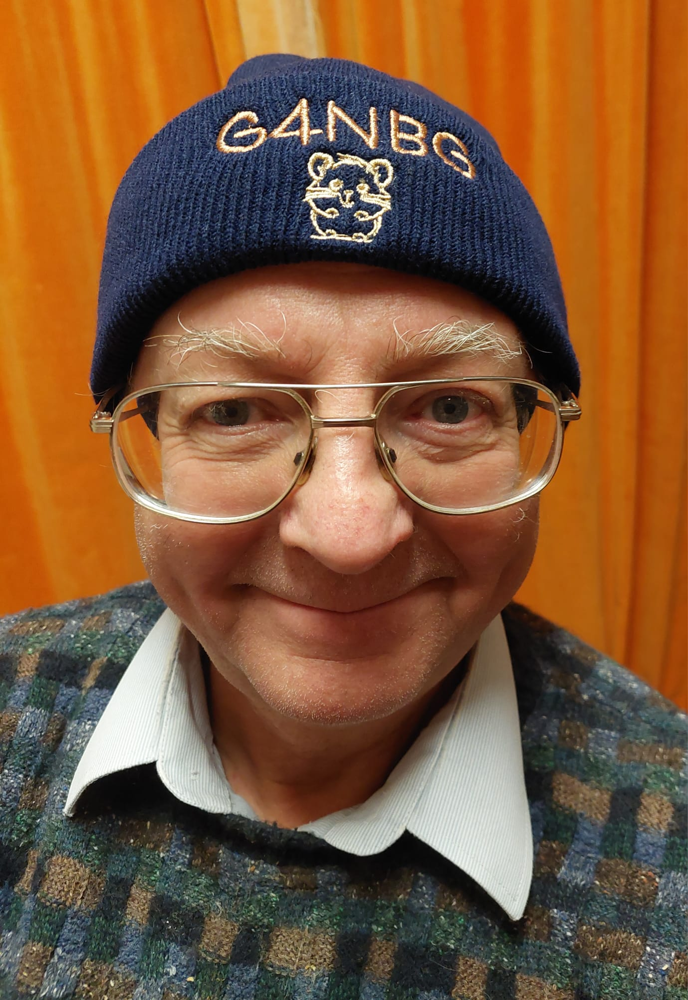

Chris Budd OBE
Professor Chris J Budd OBE, FIMA, C Math, NTF


I am the PI of the £3.5M EPSRC Programme Grant
Maths4DL on the Mathematics
of Deep Learning, joint between Bath, Cambridge and UCL.
We are advertising for a Post Doctoral Position at UCL
If you want to apply for this position see
UCL position
General stuff
Postal Address:
Dept. of Mathematical Sciences
University of Bath
Claverton Down
Bath
BA2 7AY
United Kingdom
Telephone: +44 (0)1225 386241
Fax: +44 (0)1225 386492
E-mail Address: mascjb@bath.ac.uk
Twitter: @cjbfordogs
Radio Amateur call sign: G4NBG. I am often found on 2m SSB
Here is my Curriculum Vitae
(July 2025)
Publications, talks and resources
Academic articles and recent grants (research portal)
Academic presentations
Articles for the general public about maths
Talks for the general public about maths
** STOP PRESS ** New talks on:
A Mathematical Christmas Stocking
How maths can help in the fight against COVID-19
Resources for Royal
Institution Mathematics Masterclasses, sixth form classes, and Monty Maths
Undergraduate course notes. Note that much more comprehensive course materials can be found on Moodle and in the teaching section.
MA10236: Mathematical Methods 1B
MA30241: Communicating Maths
Research and PhD Projects

Knowledge Exchange:

See my recent interview as part of the IMA
special edition on Knowledge Exchange in Maths Today
Public Engagement and Maths Education

I am happy to give FREE talks to all ages on many subjects related
to the importance and relevance of mathematics to real life.
Please get in touch
if you would like me to give you a talk.
Teaching

Facts about hamsters

By popular demand, here are some facts about hamsters
- There are 25 species of hamster
- The largest breed of hamster is the European hamster
- All Syrian hamsters as pets are descended from on pair in 1930
- The Syrian hamster is also known as the teddy bear hamster
- Hamsters can learn their name
- Hamster comes from the German word 'hamstern' meaning hoard
- Hamsters are related to lemmings
- Avoid feeding a hamster chocolate or coffee
Quotes:
The following summarise my attitude to life, mathematics etc.
- I'm playing all the right notes, but not necessarily in the right order.
- Call that a band, I've seen better bands on a cigar.
- "Captain, for me to save our lives I have to perform actions
which violate several known laws of physics and require me to develop
a completely new theoretical understanding of five-dimensional
hyperspace, all in under 5 seconds", " Do it Spock!"
- Team player is an anagram of Pay me later
- If you think that you know all the answers, then you are not
asking the right questions
- Money cannot buy you happiness. But it can buy you marshmallows.
- He digs deepest who deepest digs.
- The man with the biggest foot has the largest shoes
- This statement actually doesn't have the property which it claims that it doesn't have!
- There is no I in TEAM. There is also no I in Hamster. However there is an I in Gerbil
and two Is in Guinea Pig
- All known mathematics has already been discovered by an obscure Russian working in the late 1940's
- If all else fails, hug your teddy.
[University of Bath]
[Dept. of Mathematics]